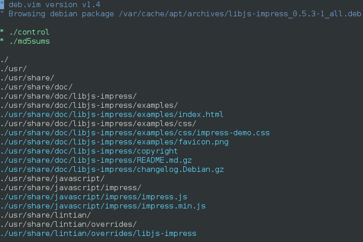
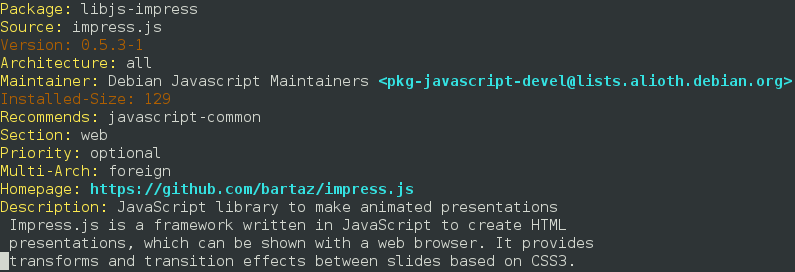

Debian GNU/Linux

O Sistema Operacional Universal
Debian
- Lançado em 1993
- Criado para ser uma distribuição Linux a ser mantida de uma maneira aberta, segundo o espírito do Linux e do GNU
- Em 1994 e 1995 o sistema dpkg ganhou notoriedade
- O projeto tem uma enorme comunidade de desenvolvedores trabalhando sob um contrato social
Versões do Debian
O ciclo de desenvolvimento das versões do Debian tem três fases
- unstable (instável) = Sid
- testing (teste) = Stretch
- stable (estável) = Jessie (8.0)
Sistema de pacotes
- Desenvolvedor Debian mantém pacotes
- “Upstream” é o desenvolvedor/autor do software
- Cada novo upload entra na versão “unstable”
- Após algum tempo de testes entra no “testing”
Ferramentas
- dpkg
- Apt (apt-get, apt-cache, …)
- Aptitude
- Synaptic
dpkg
~# dpkg -i libjs-impress_0.5.3-1_all.deb
apt
~# apt-cache search impress.js
libjs-impress - JavaScript library to make animated presentations
~# apt-get install libjs-impress
aptitude
~# aptitude search libjs-impress
i libjs-impress - JavaScript library to make animated presentations
~# aptitude install libjs-impress
Repositórios de pacotes Debian
~# cat /etc/apt/sources.list
deb http://ftp.debian.org/debian/ jessie main
deb-src http://ftp.debian.org/debian/ jessie main
Backports
~# cat /etc/apt/sources.list.d/wheezy-backports.list
deb http://http.debian.net/debian wheezy-backports main
Repositório do Noosfero
~# cat /etc/apt/sources.list.d/noosfero.list
deb http://download.noosfero.org/debian/wheezy-1.2 ./
deb-src http://download.noosfero.org/debian/wheezy-1.2 ./
Anatomia de um pacote Debian
~# vim libjs-impress_0.5.3-1_all.deb
 debPlugin.vim – a Vim plugin for browsing debian packages
* ./control

Consistência
|
Evite instalar qualquer .deb que você encontrar por aí Não instale nada "na mão" usando `make` e `make install` Mantenha seu sistema atualizado |

|
Servidor web, apache
Processa pedidos HTTP e responde (usualmente) HTML
~# apt-get install apache2
Servidor de aplicação, thin
Servidor web de aplicação Ruby
~# apt-get install thin
Banco de dados, postgresql
Banco de dados relacional
~# apt-get install postgresql
Cache de páginas, varnish
Cache HTML para sites com alto volume de tráfego
~# apt-get install varnish
Cache de objetos, memcached
Cache em memória de objetos de aplicação
~# apt-get install memcached
Servidor de email (MTA), exim4
Agente de transporte de e-mail
~# apt-get install exim4
Servidor de chat, ejabberd
Servidor de chat XMPP/Jabber escrito em Erlang
~# apt-get install ejabberd
Obrigado!
joenio@colivre.coop.br
Dúvidas?
Histórico de apresentações
Onde e quando esta apresentação foi realizada
- 17 Agosto 2015, STI UFBA, treinamento de Noosfero avançado para sysadmins